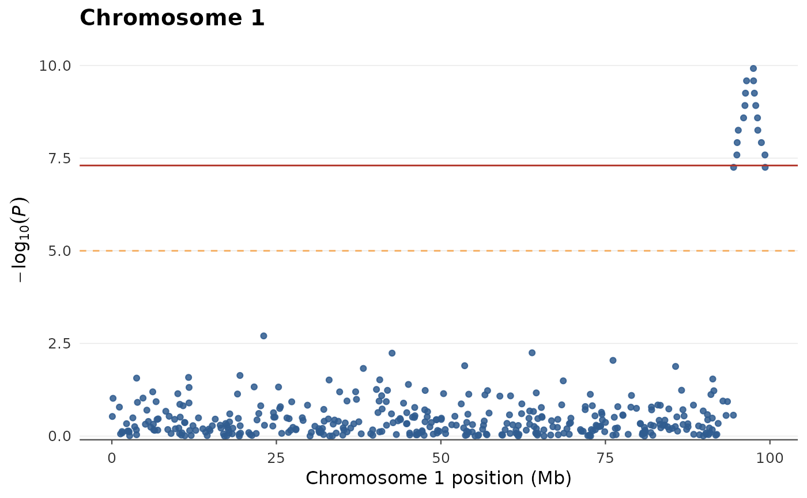
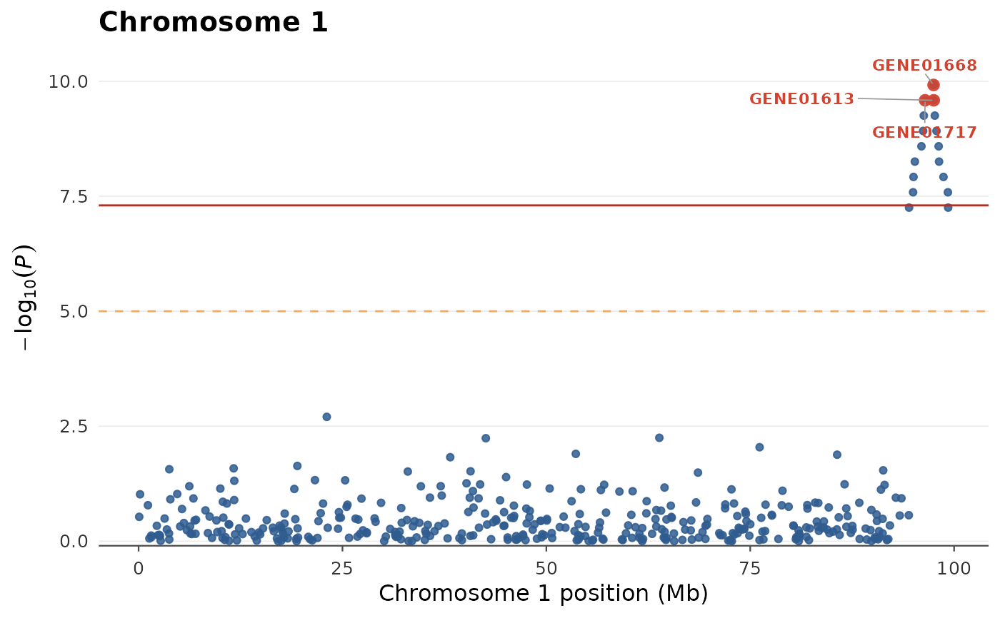

Zooms into one chromosome (optionally a base-pair window), plotting
\(-\log_{10}(P)\) against position in megabases. Significance lines and
top-marker highlighting work as in gwas_manhattan().
Usage
gwas_chromosome(
data,
chr,
xlim = NULL,
threshold = 5e-08,
suggestive = 1e-05,
highlight = NULL,
label = TRUE,
label_by = c("gene", "SNP"),
point_color = "#2f5c8f",
highlight_color = "#d1422f",
point_size = 1.4,
point_alpha = 0.85,
interactive = FALSE,
title = NULL,
subtitle = NULL
)Arguments
- data
A GWAS data frame. It is passed through
validate_gwas(), so raw column names (e.g.BP,pvalue) are accepted.- chr
The chromosome to plot (matched against the
CHRcolumn, with or without a"chr"prefix).- xlim
Optional numeric length-2 base-pair window
c(start, end)to restrict the region shown.- threshold
Genome-wide significance p-value drawn as a solid line (default
5e-8). UseNULLto omit.- suggestive
Suggestive significance p-value drawn as a dashed line (default
1e-5). UseNULLto omit.- highlight
A
highlight_top()specification, a single number (shorthand fortop_n), orNULLfor no highlighting. Highlighted markers are drawn inhighlight_color.- label
Logical; label the highlighted markers (default
TRUEwhenhighlightis given). Requires the highlighted set to be non-empty.- label_by
Column used for labels,
"gene"(default, falls back to"SNP"if absent) or"SNP".- point_color
Colour for the (non-highlighted) points.
- highlight_color
Colour for highlighted markers and their labels.
- point_size, point_alpha
Size and alpha of the non-highlighted points.
- interactive
Logical; if
TRUE, return an interactivegirafewidget with hover tooltips (requires ggiraph).- title, subtitle
Optional plot title and subtitle.
Value
A ggplot2::ggplot object, or a ggiraph::girafe() htmlwidget when
interactive = TRUE.
Examples
data(gwas_example)
gwas_chromosome(gwas_example, chr = 1)

gwas_chromosome(gwas_example, chr = 1, highlight = highlight_top(top_n = 3))
